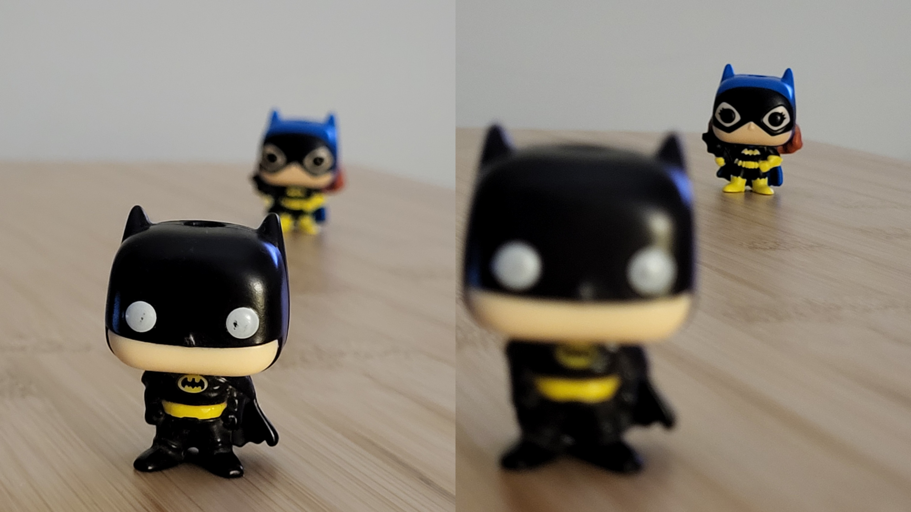
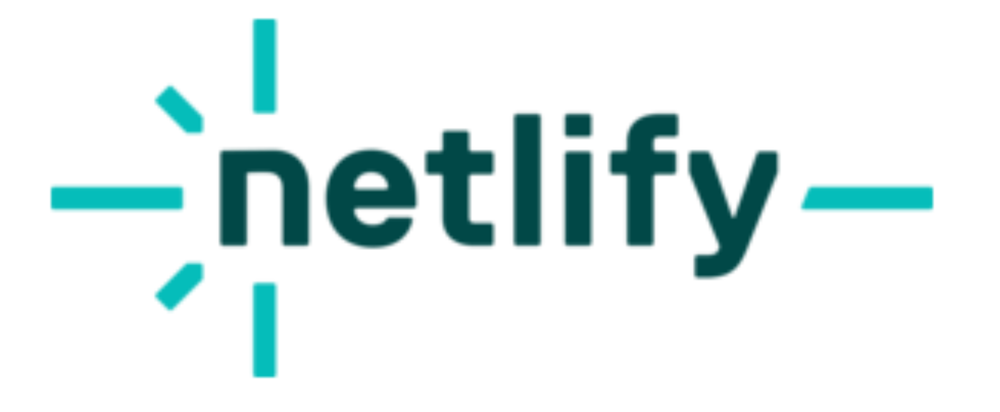

Multimedijalni sustavi
Ova stranica je izrađena kao projekt za kolegij Multimedijalni sustavi.
Ispod možete vidjeti projekte koje sam izradila za vježbe ovog kolegija.
Ako kliknete na naslove projekta ili na dropdown izbornik u gornjem dijelu stranice, moći ćete se prebaciti na pojedine projekte gdje su pojašnjenja.

Fotografiranje
Zadatak gdje smo trebali predati 3 fotografije koje koriste sljedeće tehnike:
- Ekspozicija - duga i kratka
- Fokus
- ISO ili EV
- Balans bijele boje

GIMP

Ova majca je izrađena u GIMP programu. Na majci je slika The Starry Night slikara Vincenta van Gogha uz citat iz njegovog pisma bratu Theu iz 1888.
"Looking at the stars always makes me dream. Why, I ask myself, shouldn't the shining dots of the sky be as accessible as the black dots on the map of France? Just as we take a train to get to Tarascon or Rouen, we take death to reach a star."

Inkscape

Ovaj logotip ptice je uređen u Inkscape programu. Riječ iznad logotipa je πουλί (poulí) što na Grčkom znači ptica.

Figma

Ovo je primjer mobilne aplikacije izrađene u programu Figma.
Može se vidjeti stranica za prijavu ili registraciju. Početna stranica aplikacije koja prikazuje moguće igre koje sadržuje aplikacija (Sudoku, Killer Sudoku, Nonogram, Number Match, Kriptogram, Tetris, itd.).
Kroz početnu stranicu može se dalje pristupiti postavke, dnevni izazovi, profil i jedan primjer Sudoku igre u 'Easy' teškoći.
Ako se klikne 'Hint' igra se kompletno završi (sa točnim rješenjem!)
Github i Netlify


Ovaj projekt je stranica o mojim najdražim umjetničkim djelima. Svako djelo ima svoj opis i malo o autoru (ako je poznat.)
Također za svrhu ovog projekta izradila sam 'reklame' u Canvi. Projekt je prvo napisan sa html, css, i javascript-om u VS Codu, zatim prebačen na GitHub respiratory, koji je povezan sa Netlify-em.
Za više detalja možete posjetiti 'About' sekciju na toj stranici.